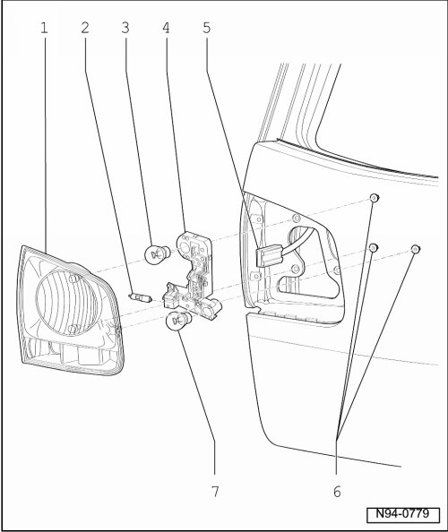

Rear Lid Tail Lamp Assembly Overview
Rear Lid Tail Lamp Assembly Overview

- Tightening specifications --> [ Tail Lamps ] Tail Lamps
1 - Housing
• Removing and installing --> [ Rear Lid Tail Lamps ] Tail Lamps
• Gap dimensions --> [ Tail Lamp Gap Dimensions ] Tail Lamp Gap Dimensions
2 - Left Back-Up Lamp (M16) and Right Back-Up Lamp (M17)
• 12V / H 21 W
• Checking --> [ Comfort System Central Control Module Output Diagnostic Test Mode ] Scan Tool Testing and Procedures
3 - Left Tail Lamp Lamp 2 (M49) and Right Tail Lamp Lamp 2 (M50)
• 12V / P 21 W / 4 W
• Checking --> [ Comfort System Central Control Module Output Diagnostic Test Mode ] Scan Tool Testing and Procedures
4 - Bulb holder
• Removing and installing --> [ Side Panel Tail Lamp Bulb Holder ] Tail Lamps
5 - Connector
• For tail lamp assembly in rear lid
6 - Nuts
• For tail lamp assembly in rear lid
7 - Left Rear Fog Lamp (L46) and Right Rear Fog Lamp (L47)
• 12V / P 21 W
• Checking --> [ Comfort System Central Control Module Output Diagnostic Test Mode ] Scan Tool Testing and Procedures